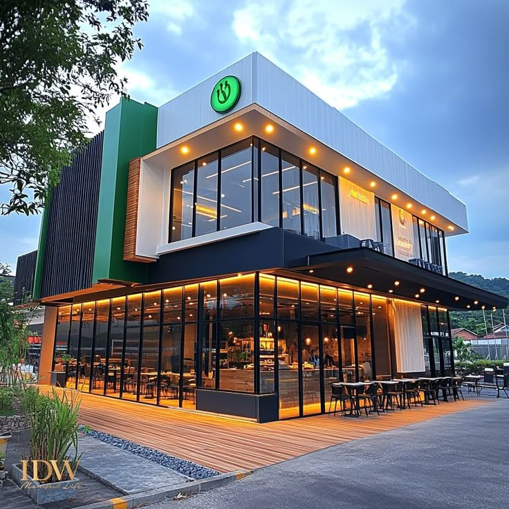

Our Story
Founded in 2010 by Chef Maria Rodriguez and her partner James Thompson, Savory Bites began as a dream to create a dining experience that celebrates both culinary artistry and warm hospitality. What started as a small neighborhood bistro has evolved into one of the city's most beloved fine dining destinations.
Our journey has been guided by a simple philosophy: use the finest ingredients, respect traditional techniques, and never stop innovating. Every dish that leaves our kitchen tells a story of passion, creativity, and dedication to excellence.
Today, we continue to push culinary boundaries while maintaining the intimate, welcoming atmosphere that has made Savory Bites a home away from home for food lovers from around the world.
